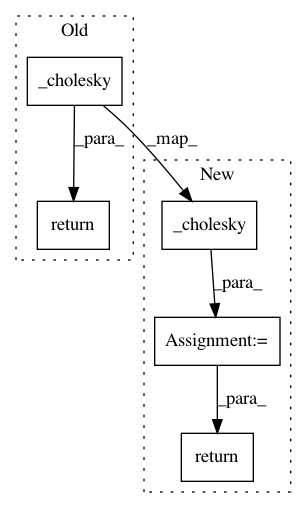

4755d9136ede8a00ea6104121fdc5bb8283dcaa0,gpytorch/lazy/batch_repeat_lazy_tensor.py,BatchRepeatLazyTensor,_cholesky,#BatchRepeatLazyTensor#,36
Before Change
@cached(name="cholesky")
def _cholesky(self):
return self.base_lazy_tensor._cholesky().repeat(*self.batch_repeat, 1, 1)
def _cholesky_solve(self, rhs):
output_shape = _matmul_broadcast_shape(self.shape, rhs.shape)
if rhs.shape != output_shape:
After Change
@cached(name="cholesky")
def _cholesky(self):
res = self.base_lazy_tensor._cholesky()
res = res.repeat(*self.batch_repeat, 1, 1)
return res
def _cholesky_solve(self, rhs):
output_shape = _matmul_broadcast_shape(self.shape, rhs.shape)
if rhs.shape != output_shape:
In pattern: SUPERPATTERN
Frequency: 3
Non-data size: 5
Instances
Project Name: cornellius-gp/gpytorch
Commit Name: 4755d9136ede8a00ea6104121fdc5bb8283dcaa0
Time: 2019-07-23
Author: gpleiss@gmail.com
File Name: gpytorch/lazy/batch_repeat_lazy_tensor.py
Class Name: BatchRepeatLazyTensor
Method Name: _cholesky
Project Name: cornellius-gp/gpytorch
Commit Name: e83dcef71990a4a6f0e7c7d6268b55096109c277
Time: 2020-07-17
Author: balandat@fb.com
File Name: gpytorch/lazy/lazy_tensor.py
Class Name: LazyTensor
Method Name: cholesky
Project Name: cornellius-gp/gpytorch
Commit Name: 025866dd2aac3257ebcb03dcc4e1b79a853b97d4
Time: 2019-07-21
Author: gpleiss@gmail.com
File Name: gpytorch/lazy/cached_cg_lazy_tensor.py
Class Name: CachedCGLazyTensor
Method Name: _cholesky